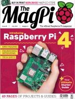
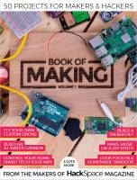

Estas páginas contienen enlaces a revistas, libros y manuales dedicados al software libre, a las distribuciones GNU/Linux y a los contenidos libres:

Número 17 - 2019 julio
Descarga (PDF 18.3 MB inglés)

Número 83 - 2019 julio
Descarga (PDF 37.4 MB inglés)

Raspberry Py Beginners Book
2º ed. - 2019 julio
Descarga (PDF 37.2 MB inglés)
Número 66 - 2019 junio
Descarga (PDF 7.4 MB español)

Número 146 - 2019 junio
Descarga (PDF 4.7 MB inglés)

Número 20 - 2019 julio
Descarga (PDF 63.8 MB inglés)
Número 16 - 2019 junio
Descarga (PDF 12.4 MB inglés)

Número 15 - 2019 junio
Descarga (PDF 11.6 MB inglés)

Número 149 - 2019 junio
Descarga (PDF 13.7 MB inglés)

Número 82 - 2019 junio
Descarga (PDF 34.8 MB inglés)

Número 66 - 2019 junio
Descarga (PDF 7.4 MB inglés)

Número 9 - 2019 junio
Descarga (PDF 16.4 MB inglés)
Número 19 - 2019 junio
Descarga (PDF 46.9 MB inglés)
(In)secure Magazine
Número 62 - 2019 junio
Descarga (PDF 10.1 MB inglés)

Wearable Tech Projects nº 1 - 2019 abril
Descarga (PDF 34,7 MB inglés)

Book of Making nº 1 - 2018 octubre
Descarga (PDF 49,0 MB inglés)

C and GUI Programming - 2019 abril
Descarga (PDF 8,98 MB inglés)

Número 17 - 2019 Primer semestre
Descarga (PDF 13,3 MB español)